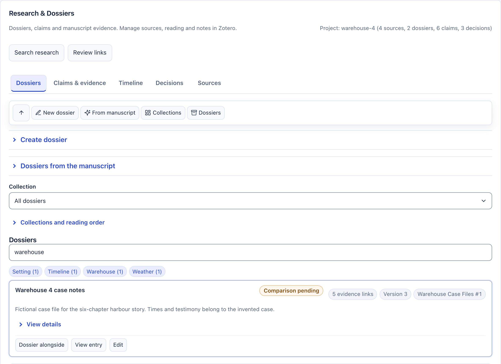

Lees de passage in haar context
Open een markering en lees de hele alinea. Bekijk welke woorden of zinnen zijn geteld en beslis zelf of de passage een aanpassing nodig heeft.
31 woorden in de voorbeeldzin, waarvan 22 functiewoorden.
Open een gemarkeerde zin of een herhaald woord in de alinea om elk geteld woord te zien. Vergelijk je concept met de laatst opgeslagen versie en houd personagedossiers en bronnen bij je manuscript. De analyse draait lokaal.
Maak een zin in de voorbeeldtekst korter of probeer ‘Check a sticky sentence’ in de Engelstalige demo.
Stille opname van het fictieve Warehouse 4-project in de ontwikkelversie.
De video kon niet worden geladen. Open de interactieve demo. Bekijk het voorbeeldproject (Engels)
Open een markering en lees de hele alinea. Bekijk welke woorden of zinnen zijn geteld en beslis zelf of de passage een aanpassing nodig heeft.

Vergelijk je open concept met het opgeslagen manuscript. Lixity meet beide met dezelfde instellingen, zodat je ziet wat er in de tekst is veranderd.

In Warehouse 4 noemen het eerste verslag en de correctie verschillende locaties. Volg een citaat naar de opgeslagen bron en vergelijk de vermeldingen op de tijdlijn.

Exporteer een opgeslagen dossier als pdf met passages en broncitaten. Maak voor proeflezers een leeswebsite met de hoofdstukken en achtergrondnotities die je wilt delen.
Lixity meet patronen en toont de bijbehorende passages. Lees ze in hun context en beslis of een herhaling, lange zin of verandering van werkwoordstijd bij de scène past.
Bekijk zinslengtes, herkende citaten en herhaalde woorden in een alinea. Vergelijk hoofdstukken. Open een markering om te zien wat is geteld.
De ingebouwde analyse werkt op je eigen computer. Daar staan ook de projectbestanden. Optionele diensten zoals kaarten en externe taalmodellen hebben eigen vereisten voor gegevens.
Bewerk een alinea in de browseroefening, die vereenvoudigde regels gebruikt. De Engelstalige demo toont een uitgebreider voorbeeldproject dat je kunt lezen. Installeer Lixity om je eigen projecten te analyseren.
Kies macOS, Windows of Linux en volg de stappen van downloaden tot voor het eerst openen.
Desktopapp downloaden (Engels)De website en de app zijn beschikbaar in zeven talen. Je kiest de analysetaal expliciet; Engels is de standaard. Technische documentatie blijft in het Engels.
Taalregels en dekking verschillen per taal; Duits en Engels bieden de diepste controles. Een vertaalde interface verandert nooit je manuscript.
Technical guides, methods and automation contracts are maintained in English.
Vertel ons wat je wilde doen en waar je vastliep. Een paar stappen of een fictief voorbeeld zijn genoeg.
Feedback geven